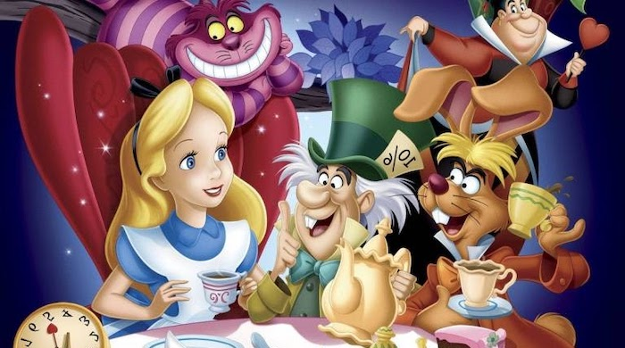

Alice in the Wonderland

Alice stumbles into the world of Wonderland. Will she get home? Not if the Queen of Hearts has her way.
Storyline
Alice is a daydreaming young girl. She finds learning poems and listening to literature boring. She prefers stories with pictures and to live inside her imagination. One day, while enduring just such a poetry reading, she spots a large white rabbit...dressed in a jacket and carrying a large watch. He scurries off, saying he's late, for a very important date. She follows him through the forest. He then disappears down a rabbit hole. Alice follows, leading her to all manner of discoveries, characters and adventures.Details
Duration: 1h 15minRelease Date: July 26 1951 (United States)
Genre: Animation · Family · Fantasy
Directors: Clyde Geronimi, Wilfred Jackson, Hamilton Luske
Starring: Kathryn Beaumont · Ed Wynn · Richard Haydn · Verna Felton